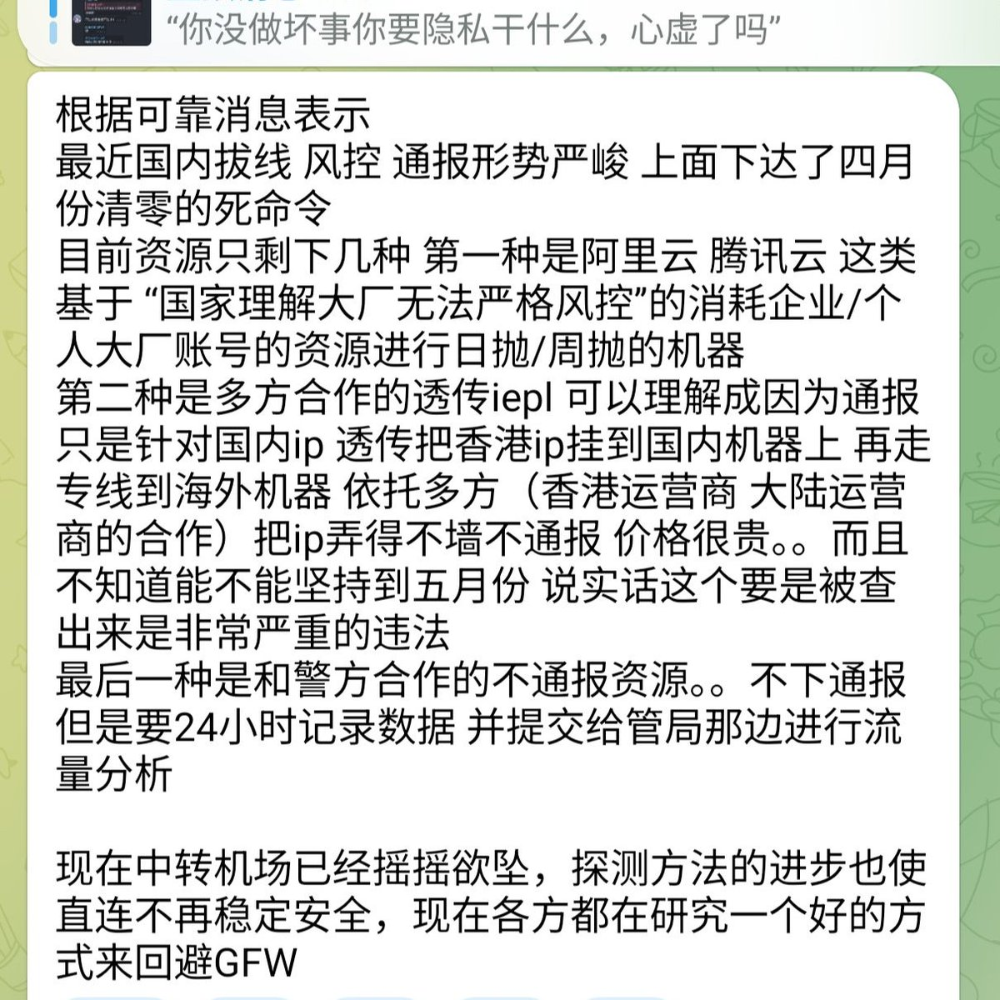

一个好的方式不就是绕过GFW出境吗，即使IPLC IEPL专线不过墙，可奈何不住国内入口被通报。与其研究IP透传自挂东南枝，不如寻求点正规渠道，比如走国际漫游。有人担心GTP协议明文，那你没做坏事要隐私干嘛？
当然这个问题也很好解决，Cloudflare WARP会挂吧，VPN会用吧？不放心就再套一层，就像Google Fi也有提供GCP节点的VPN保护数据传输安全，不过会多消耗流量。至于漫游是全局代理了，要解锁DMM就去VPNGate上找个日本家宽，配合OpenVPN连就完事了，还不要钱。
那出不了国怎么办境外电话卡？现在eSIM技术那么普及了，直接买台外版iPhone或是整个eSTK实体卡（用NAIXI打9折）写入，不就解决了？这是给洋大人专门开的洞，就像你跑到香港开汇丰信用卡，在内地当外宾搞返现，难道当局不知道你这么干吗？要动真格，那国内的监狱都不够放人的。
当然这个问题也很好解决，Cloudflare WARP会挂吧，VPN会用吧？不放心就再套一层，就像Google Fi也有提供GCP节点的VPN保护数据传输安全，不过会多消耗流量。至于漫游是全局代理了，要解锁DMM就去VPNGate上找个日本家宽，配合OpenVPN连就完事了，还不要钱。
那出不了国怎么办境外电话卡？现在eSIM技术那么普及了，直接买台外版iPhone或是整个eSTK实体卡（用NAIXI打9折）写入，不就解决了？这是给洋大人专门开的洞，就像你跑到香港开汇丰信用卡，在内地当外宾搞返现，难道当局不知道你这么干吗？要动真格，那国内的监狱都不够放人的。
